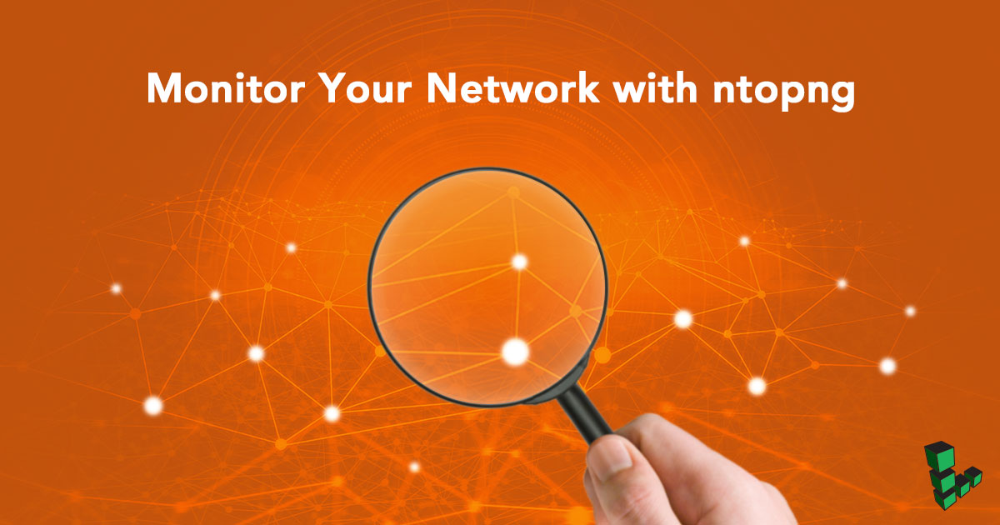
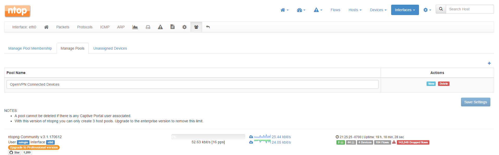
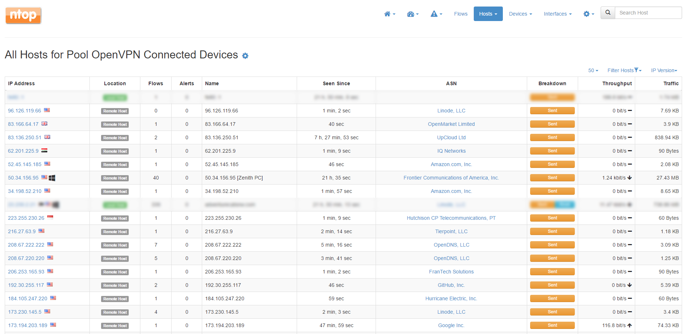

Monitor Your Network with ntopng
Updated by Linode Contributed by Andrew Lescher

Overview of ntopng Network Monitoring System
In this tutorial you will configure and install ntopng on your Linode. The tutorial will also cover configuration examples and suggestions for the web administration interface. After you complete the tutorial and have the network monitor deployed, you’ll be able to:
- Monitor and analyze traffic from your Linode, including security threats.
- Create Host Pools to group connected devices together based on your own criteria.
- Work with the user interface and view statistics, as well as make your own configurations.
Before You Begin
You will need root access to your Linode, or a user account with sudo privilege.
Update your system and install ethtool:
sudo apt update && sudo apt upgrade
sudo apt install ethtool
Install ntopng
Go to http://packages.ntop.org/ and click the link for the operating system you want to install ntopng on. We recommend you choose the stable build over nightly.
Follow the instructions to download the
.debor.rpmfile and install it into your system. The install command provided also installs nbox, a netflow application. Nbox brings requires a large amount of dependencies but is not necessary to use ntopng so you can exclude it.
Add a System User for ntopng
Ntopng runs as the user nobody by default. This is a good choice for daemons requiring minimal access to the system. However, ntopng installs files in directories which the user nobody may not have access to. The easiest solution is to create a new user for ntop:
Add user
ntopng:useradd -r -s /bin/false ntopngSet permissions for user
ntopngand installation files/directories as shown:mkdir /var/tmp/ntopng chown -R ntopng:ntopng /usr/share/ntopng /var/tmp/ntopng chmod 1770 -R /var/tmp/ntopng find /usr/share/ntopng -type d -print0 | xargs -0 chmod 744 find /usr/share/ntopng -type f -print0 | xargs -0 chmod 755
Disable TCP Segmentation Offload
Replace
eth0with your primary connection interface:ethtool -K eth0 gro off gso off tso offVerify that TCP segmentation is disabled:
ethtool -k eth0 | grep segmentationEach line of the
tcp-segmentation-offloadsection should be set tooffas shown below:tcp-segmentation-offload: off tx-tcp-segmentation: off tx-tcp-ecn-segmentation: off tx-tcp-mangleid-segmentation: off tx-tcp6-segmentation: off
Configure ntopng
Configuration options can be defined in a file or set from the command line. If you specify options in both the command line and the file, ntopng will prioritize settings in the configuration file.
Create a configuration file for ntopng using the example below. Replace 192.0.2.0 with your Linode’s domain or public IP address. If needed, replace eth0 with your primary network interface. Run man ntopng from the terminal to see all available configuration parameters.
- /etc/ntopng/ntopng.conf
-
1 2 3 4 5 6 7 8--user=ntopng --interface=eth0 -w=192.0.2.0:3005 --community --daemon --dump-flows=logstash # optional --disable-autologout # optional --disable-login=1 # optional
NoteThe option flags commented with# optionalare not mandatory. All flags requiring input must be followed by an=and a value.
Configuration File Breakdown
| Flags | Features |
|---|---|
| –user | Designates the user ntopng will run under. Leaving this flag out of the configuration file will default to nobody. |
| –interface | The network interface ntopng will monitor. |
| -w | HTTP address and port used to connect to the admin interface. While port 3005 is the default, you may define any. |
| –community | The license ntopng will run under. |
| –daemon | ntopng can be used as a forward service or as a background daemon. |
| –dump-flows | Logged traffic can be shared with other services |
| –disable-autologout | Forces ntopng to allow users to remain logged into the web interface without being deactivated for inactivity. |
| –disable-login | 1 to disable password authentication, 0 to require authentication. |
Firewall Rules For ntopng
Ntopng requires ports 3005 and 3006 opened in your firewall.
UFW
ufw allow 3005:3006/tcp
iptables
iptables -A INPUT -p tcp --match multiport --dports 3005:3006 -j ACCEPT
Access ntopng’s Web Interface
Start ntopng:
ntopng /etc/ntopng/ntopng.confNavigate to
192.0.2.0:3005in a web browser, replacing192.0.2.0with your domain or IP. If you enabled autologin, you’ll be routed to the Welcome page. If you did not enable autologin, enterusername:adminandpassword:adminin the pop-up window. You’ll then be prompted to set a new password.
Create a Host Pool
If you want to group devices over the same network or host a home media server, you can use a host pool. This example uses OpenVPN to group connected devices together (you do not need to be running OpenVPN).
In the Interfaces dropdown menu, select your main connection interface. In this case, it’s
eth0. In the menu directly below the ntop logo, select the icon that resembles a group of 3 people. Select Manage Pools.Click on the
+icon on the far right of the screen. Give your pool a descriptive name and save.
Click on the Unassigned Devices tab. This is a list of devices currently transmitting data through the Linode (you should at least see the device you’re connecting from listed here). Determine which devices you’ll add to your pool and add them. Click Save Settings when you’re finished.
To view data from your host pool, you’ll need to mouse over the Hosts dropdown and select Host Pools. You’ll find the pool name you created listed on this page. Click on it. Here you’ll see all currently open connections from each host in your pool:

Note
If you want to see all host connections on a single page, set the number of rows to display per page next to the filtering options above the table.
Enable Alerts and Domain Blocking
Ntopng provides a simple and convenient method for monitoring threats.
CautionNtopng does not replace core security features such as a properly configured firewall. It is meant to run in addition to an existing setup.
Near the top of the web interface, scroll over Settings and select Preferences. Click on Alerts in the menu to the left. Click on Enable Alerts and choose which alerts you’d like to enable.
Scroll over the alert icon with the exclamation point in the top menu bar. Click on Alerts. All network alerts are recorded and displayed here. This page fills up quickly due to internet traffic and bot probes. If you locked down all ports on your machine excluding those needed for connections, ntopng will log all attempts to bypass those ports.
In addition, ntopng receives nightly updates to a blacklisted hosts file, supplied by spamhaus.org and dshield.org. Connections made to and from these blacklisted hosts will be blocked outright by ntopng. While this should not be considered a full security solution, this is a good start to counteract malware and spam from infecting systems on your network.
Next Steps
Now that you have some basic knowledge of how ntopng is used and some idea of its capabilities, you may want to further explore configurations for your specific situation. You can find detailed information at the ntopng product page of ntop’s website.
Also see Network Security Using ntopng for a thorough guide on using ntopng to enhance the security of your network.
Join our Community
Find answers, ask questions, and help others.
This guide is published under a CC BY-ND 4.0 license.